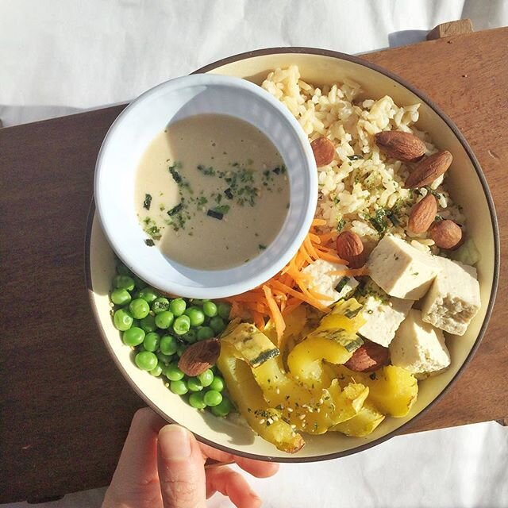

Lemon Maple Tahini Buddha Bowl (vegan)

Oh hey lookie. The rare savory post whoa what long time, no see. Idk why but I've really been loving savory lately. And rice. Yes, rice. Mmmmmm rice love is forever. SO I made an awesome buddha bowl with lots of fun fall themed foods. So many flavors and mystery bites it's like what's gonna come next. Gotta make salads fun or else they suckkkk.
Lemon Maple Tahini Buddha Bowl (vegan)
Serves: 1
-
2 cups shredded lettuce
-
2/3 cup cooked brown rice
-
3 oz tofu
-
4 oz baked delicata squash
-
1/4 cup shredded carrots
-
1/2 cup frozen peas
-
6-7 tamari almonds (Woodstock Foods brand)
-
1 TBSP tahini
-
2 TBSP sugar free syrup
-
juice from 1/4 lemon
-
3-5 drops liquid stevia
-
water to desired consistency
In a bowl, set your lettuce base. Top with cooked rice, tofu, squash, carrots, peas, and almonds. For the tofu, I really enjoy it raw. I just drain, dry, cut, and eat. BUT it's awesome if you bake it in the oven, too! Try both ways and see what you like. :) For the delicata, I cut mine in half and bake it in the oven at 425 for 20 minutes, or until soft. The peas can just be microwaved for a minute to make it not frozen. Easy!!
Make the dressing by mixing the tahini, syrup, lemon juice, stevia, and water. Just slowly add the water as the last ingredient so you can get the consistency you want! I like it thin so it will more easily spread onto everything in the bowl.